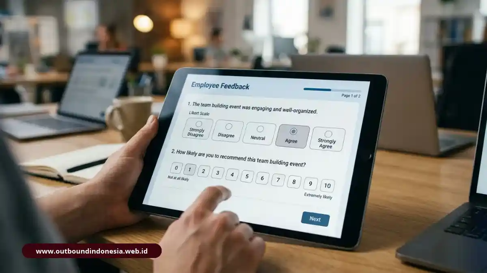

Cara mengukur efektivitas team building adalah dengan membandingkan kondisi tim sebelum dan sesudah kegiatan melalui lima indikator perilaku: kolaborasi, rasa saling percaya, komunikasi, keterikatan kerja (engagement), dan sinyal retensi. Pengukurannya dilakukan secara berkala mulai dari Hari-H hingga tiga bulan sesudahnya agar menghasilkan Return on Investment (ROI) yang dapat dipertanggungjawabkan.
Dasar Metodologi: Pelajari perbedaan mendasar antara simulasi outbound dan team building terstruktur pada artikel pilar: Perbedaan Outbound dan Team Building: Ulasan Lengkap dan Contoh Kasus.
Mengapa Acara yang Seru Belum Tentu Mengubah Dinamika Tim?
Acara yang berlangsung seru, penuh tawa, dan bertebaran di media sosial karyawan hanya membuktikan satu hal: peserta menikmati rangkaian kegiatan hiburan tersebut. Namun, hal itu sama sekali bukan jaminan bahwa cara mereka berkoordinasi, menangani friksi, atau menyelesaikan serah terima proyek akan membaik saat kembali bekerja di kantor pada hari Senin.
Banyak laporan pasca-kegiatan outbound yang diserahkan ke manajemen hanya memuat galeri foto dokumentasi dan kutipan testimoni kesan-pesan normatif. Padahal, manajemen eksekutif membutuhkan bukti konkret: apakah miskomunikasi antardivisi berkurang? Apakah kecepatan eksekusi meningkat? Apakah eskalasi konflik berkurang?
Team building harus diperlakukan sebagai investasi pengembangan organisasi, bukan beban biaya operasional (cost center). Investasi baru dapat dipertahankan di hadapan direksi keuangan apabila memiliki baseline metrik yang terukur. Temuan riset tempat kerja Gallup memperkuat hal ini: tim dengan iklim saling percaya dan komunikasi yang solid terbukti mencatat produktivitas sekitar 21 persen lebih tinggi dan angka absensi sekitar 41 persen lebih rendah dibandingkan tim yang mengalami friksi internal kronis.
Apa Lima Indikator Utama Keberhasilan Team Building?
Untuk menghindari pengukuran yang kabur, HRD disarankan memusatkan evaluasi pada lima indikator perilaku yang dapat diamati langsung oleh atasan maupun sesama rekan kerja:
- Kolaborasi Antardivisi: Kelancaran koordinasi kerja lintas fungsi, berkurangnya hambatan birokrasi serah terima tugas (handover friction), dan hilangnya kecenderungan saling melempar tanggung jawab.
- Kepercayaan Timbal Balik (Mutual Trust): Anggota tim berani mengakui ketidaktahuan atau kekeliruan tanpa rasa takut dipermalukan, serta saling menghargai kompetensi antarbagian.
- Kualitas dan Keterbukaan Komunikasi: Anggota tim aktif memberikan masukan konstruktif secara transparan dalam rapat kerja formal maupun diskusi informal.
- Employee Engagement: Peningkatan antusiasme, inisiatif mandiri, dan tingkat partisipasi aktif karyawan dalam mengejar target organisasi.
- Sinyal Retensi Karyawan: Tumbuhnya rasa bangga terhadap tim (sense of belonging) yang tercermin pada penurunan intensitas keluhan dan niat pengunduran diri (turnover intentions).
Bagaimana Kerangka KPI dan Jadwal Evaluasi Pasca-Acara?
Kerangka evaluasi ideal memasangkan setiap indikator dengan metode alat ukur yang tepat serta interval waktu pengujian yang disiplin, mulai dari Hari-H hingga 90 hari setelah kegiatan:
| Indikator Keberhasilan | Metode atau Instrumen Pengukuran | Waktu Pelaksanaan |
|---|---|---|
| Kepuasan & Reaksi Peserta | Survei pasca-kegiatan digital (Feedback Form: logistik, modul, fasilitator) | Hari-H (Sesaat setelah penutupan) |
| Mood & Energi Tim | Pulse survey cepat 3 pertanyaan komparatif (Pre-event vs Post-event) | Hari-H (Sebelum & sesudah acara) |
| Kolaborasi Antardivisi | Asesmen perilaku kerja oleh kepala divisi / atasan langsung | 2 Minggu pasca kegiatan |
| Kualitas Komunikasi | Survei komunikasi internal berbasis Skala Likert 1-5 | 2 - 4 Minggu pasca kegiatan |
| Employee Engagement | Survei loyalitas karyawan: Employee Net Promoter Score (eNPS) | 1 Bulan pasca kegiatan |
| Sinyal Retensi & Performa | Tinjauan data absensi, keterlambatan tugas, dan tren turnover karyawan | 1 - 3 Bulan pasca kegiatan |
Interval waktu bertahap ini sangat penting. Indikator perilaku seperti kolaborasi membutuhkan waktu untuk diinternalisasi dalam ritme kerja kantor harian. Sebaliknya, dampak terhadap retensi dan absensi baru terbaca secara stabil setelah minimal 3 bulan berjalan. Menilai efektivitas program hanya dalam 24 jam pertama akan menyesatkan hasil audit HR.
Bagaimana Menyusun Survei Post-Event dengan Skala Likert dan eNPS?
Survei pasca-kegiatan yang efektif harus dirancang ringkas (maksimal 5-7 menit pengisian), menggunakan Skala Likert terstandarisasi (1 = Sangat Tidak Setuju hingga 5 = Sangat Setuju), dan diselenggarakan dengan jaminan kerahasiaan identitas (anonim) agar responden menjawab secara jujur.

Desain instrumen kuesioner survei Skala Likert dan pengukuran eNPS periodikContoh Butir Pernyataan Survei Skala Likert (1 - 5):
- "Melalui kegiatan ini, saya berhasil membangun kedekatan emosional yang lebih erat serta memahami kepribadian rekan kerja lintas divisi."
- "Saya merasa jauh lebih nyaman dan aman untuk menyampaikan pendapat, kritik, maupun ide baru dalam diskusi tim kantor."
- "Simulasi tantangan di lapangan membantu saya memahami secara jelas peran dan batas tanggung jawab saya dalam pencapaian target kolektif."
- "Koordinasi kerja dan alur serah terima pekerjaan antardepartemen kini terasa lebih responsif dan minim hambatan."
Penerapan Employee Net Promoter Score (eNPS):
Pada evaluasi bulan pertama, ajukan satu pertanyaan kunci: "Dalam skala 0 hingga 10, seberapa besar kemungkinan Anda merekomendasikan perusahaan ini sebagai tempat bekerja yang suportif kepada rekan profesional Anda?"
Kelompokkan responden menjadi Promoters (skor 9-10), Passives (skor 7-8), dan Detractors (skor 0-6). Skor eNPS dihitung dari persentase Promoters dikurangi persentase Detractors. Kenaikan tren eNPS pasca program mengindikasikan keberhasilan peningkatan iklim budaya kerja internal.
Bagaimana Memastikan Hasil Acara Terbawa ke Pekerjaan Nyata?
Proses membawa wawasan dari lapangan outdoor ke meja kantor dikenal sebagai transfer of training (transfer pembelajaran). Tanpa intervensi transfer yang disengaja, 80 persen energi positif dan komitmen yang muncul saat outbound akan luntur dalam waktu kurang dari 7 hari kerja.
Kunci keberhasilan transfer terletak pada fasilitator utama saat memandu sesi debriefing reflektif. Fasilitator harus mampu mengajukan pertanyaan bridging yang menantang:
"Ketika kelompok tadi kehabisan waktu dalam memecahkan teka-teki, apa reaksi awal Anda? Di mana pola saling menyalahkan serupa pernah terjadi dalam proyek divisi kantor Anda? Perilaku nyata apa yang akan kita ubah mulai besok pagi?"
Di akhir sesi, setiap kelompok diwajibkan menyusun Action Contract atau komitmen perilaku tertulis berisi 2 tindakan konkret yang disepakati bersama. Dokumen ini diserahkan kepada atasan dan HRD sebagai bahan monitoring evaluasi pada minggu kedua dan keempat.
Seleksi Fasilitator: Kualitas debriefing sangat bergantung pada jam terbang trainer. Baca panduan seleksinya di: Cara Memilih Vendor Outbound dan Team Building: 7 Kriteria Evaluasi.
Bagaimana Menghitung dan Membingkai ROI Team Building?
Menghitung Return on Investment (ROI) pelatihan soft skills korporat sebaiknya dibingkai sebagai analisis rasio komparatif antara nilai investasi program dengan estimasi penghematan biaya atau mitigasi risiko inefisiensi, bukan sekadar formula laba kotor kaku.
Contoh Komparasi Nilai Bisnis:
Bila biaya turnover 1 karyawan setara dengan 3-6 bulan gaji (biaya rekrutmen ulang, kehilangan produktivitas, dan onboarding), maka program team building seharga Rp 40 juta yang berhasil menyelamatkan retensi 2 orang staf kunci telah menghasilkan penghematan biaya riil yang jauh melampaui biaya pelaksanaannya.
Demikian pula bila kecepatan koordinasi memperpendek lead time peluncuran produk sebesar 15 persen, nilai akselerasi pendapatan tersebut merupakan kontribusi nyata dari soliditas tim kerja.
Dalam menyusun laporan untuk Dewan Direksi, sampaikan data dengan bahasa tren dan korelasi positif yang realistis, dengan tetap mencatat faktor pendukung eksternal lainnya seperti restrukturisasi beban kerja atau pembaruan sistem teknologi.
Ingin Menerapkan Program Terukur untuk Mengatasi Silo Mentality?
Lihat arsitektur program hybrid 2 hari 1 malam yang mengombinasikan fun games, problem solving, dan refleksi mendalam lintas departemen.
Pelajari Desain Rundown 2D1NKesimpulan Praktis
Ukur perubahan perilaku kerja nyata di kantor, bukan tingkat kemeriahan panggung sesaat. Tetapkan data acuan (baseline) sebelum program dilaksanakan, jalankan instrumen evaluasi secara konsisten pada Hari-H, dua minggu, satu bulan, dan tiga bulan sesudahnya, lalu sajikan laporannya secara transparan kepada pemangku kepentingan.
Manfaatkan Skala Likert 1-5 dan pengukuran eNPS untuk menghasilkan tren data komparatif yang valid. Libatkan atasan divisi secara aktif agar komitmen perilaku yang disepakati saat debriefing benar-benar menjelma menjadi kebiasaan kerja baru yang produktif.
Susun template kuesioner dan tentukan matriks keberhasilan Anda sekarang sebelum agenda team building korporasi berikutnya digelar.